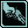
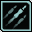

士兵概览 (LWOTC)
小队
与 Long War 或者原版 XCOM 2 不同 ，整个战役过程中小队最大人数保持不变。玩家在大多数任务中最多可派遣8名士兵，在特殊任务中最多可派遣10或12名士兵。网络塔突袭和天选者要塞的任务最多只能派5名士兵。在涉及避难所的任务中，你的小队会由分配给该避难所的顾问和部分反抗军作为额外兵力。
不过，由于 渗透机制 的存在，在每个任务中尽可能多地派遣士兵并不可取。渗透机制要求小队在执行任务前等待渗透进度提升，以免任务过于困难。派遣过多士兵会延长全面渗透（100%）所需的时间，进而导致这些士兵更长时间无法使用。此外，士兵会因疲劳而降低意志力，这既可能是任务耗时过长导致的，也可能是战斗结果造成的。
由于需要管理大量士兵和任务，游戏提供了在小队管理界面分配士兵、创建持久小队的功能，以便通过从列表中加载小队快速选择士兵，然后根据需要进行临时调整。为某个任务调整小队构成不会改变小队的原始配置。如果所有小队都在执行任务，将创建一个“临时”小队用于派遣。小队管理大多是可选的，但它可以作为喜好士兵组合的快捷方式使用，一旦解锁 军官 ，它还能方便地将士兵安排在同一军官麾下，以最大化领导力的加成效果。
职业
士兵初始为新兵（Rookie），没有职业，在晋升为列兵（Squaddie）时会被随机分配为8个主要职业之一：
|
突击兵 |
榴弹兵 |
机枪手 |
游骑兵 |
神枪手 |
忍者 |
专家 |
技术兵 |
随着战役推进，士兵可以在 游击战术学校 接受训练，转为指定职业，并可在此晋升为 军官 并学习新技能。新兵也可以训练为 灵能士兵 ，这是通过建造 灵能实验室 解锁的职业。拥有 沈的礼物 DLC的玩家，在完成失落之塔任务或研究机械化战争后，可以制造机器人士兵： SPARK 。完成失落之塔任务会直接获得一个免费的SPARK单位。
阵营职业
属于三个阵营的特殊士兵也可以加入XCOM的队伍：
|
死神 |
散兵 |
圣殿骑士 |
这些士兵拥有特殊机制和装备，整体实力更强，但在其他方面的行为与普通XCOM士兵相同。每个阵营最多只能拥有两名英雄角色，想要招募更多士兵需要提升对该阵营的影响力。
技能
XCOM随机技能
由于 高级作战中心 在WOTC（天选者之战）中被移除，取而代之的是 训练中心 (和 医务室 )， 现在所有士兵在升级时都可以获得能力点（Ability Points，简称AP）。此外，完成一些非常特殊且困难的任务（如击败天选者）后，还会获得一部分共享的XCOM能力点池。这些士兵拥有专属的“XCOM随机技能”，分为4个层级：
- 2个T1技能，每个消耗10AP
- 2个T2技能，分别消耗15AP、20AP
- 2个T3技能，分别消耗25AP、30AP
- 1个T4技能，消耗35AP
只要训练中心设施建成，这些技能都可以学习（前提是有足够的 AP）。各层级技能不设军衔要求；也就是说，即使是列兵（Squaddie）也能学习T4技能，只是需要消耗大量的共享XCOM AP。
值得注意的是，这些技能相比LW2更加贴合职业本身的定位——例如，不擅长使用手雷的职业不会再随机获得与手雷相关的技能。
手枪技能
与LW2类似，所有士兵都可以装备手枪并学习 手枪技能 ，不过这些技能现在需要消耗AP，并通过与XCOM随机技能相同的方式获取。它们显示在XCOM随机技能下方一行，因此需要在技能界面向下滚动才能看到。
下表列出了可用的技能及其对应的AP消耗。
|  |  | |||||
| 5 | 5 | 10 | 10 | 15 | 15 | 20 |
基础技能
- 所有士兵现在都会获得一个新技能 站起来！ 可以用两个行动点使一名单位脱离失去意识状态。从失去意识状态脱离的单位会进入混乱状态。这为恢复士兵提供了一种不依赖复活协议（Revival Protocol）的额外方式。
- 所有士兵还会获得另一个新技能 叩击 可以击晕被心灵控制的友军，并造成其最大生命值30%的伤害。这为控制被敌人控制的己方士兵、防止他们攻击自己提供了另一种方法。
招募
在新兵和老兵难度下，招募新兵的花费为10补给；指挥官难度为15补给；传奇难度为20补给。在新兵和老兵难度下，初始时有5名可招募的新兵；指挥官难度为3名；传奇难度为0名。通过让 反抗军 执行“招募”任务，可以让更多士兵加入。新兵也可以通过黑市或任务奖励获得。
阵营士兵只能通过隐秘行动招募，且仅在该阵营的可用士兵少于2名（不包括被俘、训练中或其他原因暂时无法出战的士兵）时才能招募。在战役开始的破门行动（Gatecrasher）阶段，系统会随机赠送一名阵营士兵（也可在创建战役时通过附加选项选择指定阵营）。
当奖励获得一名士兵时，如果当前的力量等级达到或超过以下门槛，该士兵将直接获得相应军衔：
- 列兵 - 0
- 上等兵 - 2
- 下士 - 4
- 中士 - 8
- 上士 - 14
- 技术军士 - 20
- 枪炮军士 - 35
- 军士长 - 40
经验值
在Long War of the Chosen中，士兵的经验值主要通过完成任务获得。击杀敌人和隐秘行动也会提供经验值。
任务经验
任务结束时，根据任务开始时敌人的数量计算总经验值，这个数值会在参与任务的士兵之间平均分配，最少按3名士兵计算。达到军士长（或等效最高军衔）的士兵会将其三分之一的任务经验捐献给小队的其他成员。因此，大型小队的士兵获得的经验少于小型小队的士兵，因为相同的总经验要分给更多人。不过，如果小队人数少于3人，系统仍会按3人计算，空缺部分的经验会浪费掉。对于以敌人增援为主的任务，基础经验会按照“7 + 区域强度”来计算为预设敌人数。
通过完成任务获得的经验值会根据士兵的职业，乘以一个职业专属的系数：
|
|
|
|
|
|
|
|
|
|
|
|
|
|
| 5.7 | 5.75 | 5.7 | 5.7 | 5.7 | 5.7 | 5.95 | 5.8 | 5.8 | 5.7 | 5.7 | 5.7 | 5.7 |
击杀经验
每击杀一名敌人可获得1点经验，失魂者每击杀1个只获得0.25点经验；重型敌人如破坏者、看门人和天选者每个击杀可获得2点经验；裁决者被击杀时可获得3点经验。
不过，每个任务可分配的击杀经验值有上限。这个上限为任务开始时的敌人数量。例如，若任务开始时有8个敌人，则本次任务最多只能获得8次击杀经验，不管这些击杀目标是预设敌人还是增援部队。
隐秘行动经验
隐秘行动为参与的士兵提供3-4点经验。如果隐秘行动遭遇伏击，只有救援小队获得任务经验，执行隐秘行动的士兵不会获得任务经验。但这些士兵仍可通过击杀敌人获得击杀经验。
请注意，如果士兵自上次晋升以来尚未参加过战斗任务，则无法通过隐秘行动经验晋升军衔。从隐秘行动伏击中被救出不算作战斗任务。
晋升
晋升到每个军衔所需的经验值会根据难度不同而有所差异。需要注意的是，每次任务最多只能晋升一级军衔：
| 等级 | 需要的经验 | |||
| 新兵 | 老兵 | 指挥官 | 传奇 | |
|
列兵 |
3 | 3 | 3 | 3 |
|
上等兵 |
10 | 13 | 14 | 15 |
|
下士 |
25 | 31 | 34 | 37 |
|
中士 |
49 | 58 | 64 | 70 |
|
上士 |
73 | 95 | 105 | 115 |
|
技术军士 |
107 | 143 | 158 | 173 |
|
枪炮军士 |
152 | 203 | 224 | 245 |
|
军士长 |
208 | 276 | 304 | 332 |
属性
- 生命值（Health）：士兵在死亡或进入流血倒地前能承受的伤害量。
- 命中（Aim）：决定基础命中几率。
- 防御（Defense）：降低敌人的命中几率。防御为负时会增加敌人的命中几率。
- 闪避（Dodge）：有几率降低敌人命中的打击效果（具体机制见“机制” 机制 章节）。闪避为负时，有几率提升敌人命中的打击效果。
- 移动力（Mobility）：士兵单次行动可移动的米数（不是格子，1 格 = 1.5 米）。
- 侵入（Hacking）：决定黑客行为的成功几率。
- 意志（Will）：抵御灵能攻击、眩晕效果（如 强袭枪兵 的攻击）的防御属性，但不再影响流血倒地几率，流血倒地现在基于过量伤害。意志同时也作为疲劳属性使用。
- 灵能（Psi Offense）：决定部分 灵能技能 的成功率和强度。
- 战斗智商（Combat Intelligence）：决定士兵从下士开始每次晋升获得的能力点（AP）数量（总共7个军衔可获得 AP）：最低为4点，每提高一级增加1点。
| XCOM职业AP获得 | ||||||||
| 等级 |
|
|
|
|
|
|
|
|
| 总的AP |
最低 |
4 | 8 | 12 | 16 | 20 | 24 | 28 |
|
低 |
5 | 10 | 15 | 20 | 25 | 30 | 35 | |
|
标准 |
6 | 12 | 18 | 24 | 30 | 36 | 42 | |
|
高 |
7 | 14 | 21 | 28 | 35 | 42 | 49 | |
|
最高 |
8 | 16 | 24 | 32 | 40 | 48 | 56 | |
- 英雄单位获得额外的AP用于学习其基础技能树中的技能，这些技能同样需要消耗AP。这也意味着玩家可以选择跳过某个主技能树的技能，以节省AP，用于学习XCOM随机技能。此外，英雄单位基于战斗智商获得的总AP略高于普通士兵，但其每级获得的AP并非线性分布，大部分AP会在高阶军衔时获得。下方展示了不同战斗智商下每个军衔的AP获得量及总AP，可用于XCOM随机技能，以及主技能树技能的消耗。
| 英雄职业AP获得 | ||||||||
| 等级 |
|
|
|
|
|
|
|
|
| 各军衔获得AP |
最低 |
0 | 5 | 5 | 6 | 6 | 7 | 2 |
|
低 |
0 | 6 | 6 | 7 | 7 | 9 | 4 | |
|
标准 |
1 | 7 | 7 | 8 | 9 | 11 | 6 | |
|
高 |
2 | 8 | 8 | 9 | 10 | 13 | 8 | |
|
最高 |
2 | 9 | 9 | 10 | 11 | 15 | 10 | |
| 总的AP |
最低 |
0 | 5 | 10 | 16 | 22 | 29 | 31 |
|
低 |
0 | 6 | 12 | 19 | 26 | 35 | 39 | |
|
标准 |
1 | 8 | 15 | 23 | 32 | 43 | 49 | |
|
高 |
2 | 10 | 18 | 27 | 37 | 50 | 58 | |
|
最高 |
2 | 11 | 20 | 30 | 41 | 56 | 66 | |
| 基础技能消耗 | 10 | 11 | 12 | 13 | 14 | 25 | 30 | |
初始属性
士兵的初始属性是否随机取决于“龙生九子”（Not Created Equally）选项是否启用。默认启用，士兵会拥有随机初始属性，使每名士兵独一无二。禁用该选项后，所有士兵的初始属性固定为平均值。 SPARK 始终为“天赋均等”，不拥有意志或灵能属性，并且其初始属性相比普通士兵有所不同：+8生命值，+20防御，-3移动力，+1护甲。
“龙生九子”通过在属性之间交换点数来运作，且不会出现特别糟糕或过强的新兵。例如，一名命中高的新兵，可能会有较低的移动力或生命值。在属性分配上，不同属性的“点数”价值不同。所有属性的总点数为483。这个信息可以用于在建造 灵能实验室 之前预先判断新兵的灵能，从而保留高灵能的新兵作为未来的 灵能士兵 :
- 闪避、意志、侵入和灵能各值1点。
- 命中值3点
- 生命值和移动力各值12点。
- 防御不进行随机，始终为0。
- 战斗智商基于灵能的数值划分：5-8为最低，9-14为低，15-25为标准，26-31为高，32-35为最高。
在新兵难度下，士兵还会额外获得+5意志和+1生命值，非阵营士兵还会额外获得+10命中。
| 初始属性 | ||||||||
| 属性 |
生命值 |
命中 |
防御 |
闪避 |
移动力 |
侵入 |
意志 |
灵能 |
| 最小 | 3 | 55 | 0 | -10 | 13 | 1 | 15 | 5 |
| 平均 | 4 | 65 | 0 | 5 | 15 | 5 | 30 | 20 |
| 最大 | 7 | 75 | 0 | 20 | 18 | 20 | 45 | 35 |
Spark的属性
与普通士兵不同，制造出的SPARK单位的属性都是完全相同的，具体属性如下：
| 初始属性 | ||||||||
| 属性 |
生命值 |
命中 |
防御 |
闪避 |
移动力 |
侵入 |
意志 |
护甲 |
| 基础 | 12 | 65 | 20 | 0 | 12 | 35 | 40 | 1 |
各职业属性
随着士兵在其所属职业中晋升，他们会获得属性加成。以下是每个职业的总属性增幅：
| 总属性获得 | |||||
| 职业 |
生命值 |
命中 |
闪避 |
侵入 |
意志 |
|
|
4 | 16 | 0 | 0 | 10 |
|
|
4 | 18 | 0 | 0 | 8 |
|
|
3 | 18 | 0 | 0 | 8 |
|
|
3 | 20 | 0 | 0 | 8 |
|
|
2 | 28 | 0 | 0 | 6 |
|
|
2 | 16 | 10 | 40 | 8 |
|
|
3 | 16 | 0 | 80 | 10 |
|
|
4 | 18 | 0 | 0 | 8 |
|
|
3 | 16 | 0 | 0 | 10 |
|
|
0 | 20 | 0 | 65 | - |
|
|
2 | 26 | 0 | 25 | 10 |
|
|
4 | 13 | 0 | 0 | 18 |
|
|
3 | 14 | 0 | 0 | 10 |
* 灵能战士同样会在升级时获得灵能，从列兵时的45开始，每升一级增加4点，最高在军士长达到73。
羁绊
士兵羁绊系统从 War of the Chosen 中移植过来，并做了一些小改动。
关于羁绊
两名士兵可以通过提升默契值来建立羁绊。只需让他们一同执行任务即可提高默契值。默契值范围为1.0至10.0，当达到10.0时，可以建立羁绊。每次羁绊升级后，默契值上限提高5.0，分别为二级15.0，三级20.0。
在任务中通过撤离救出正在流血倒地的士兵，会提升救人与被救者之间的默契值。
唯一解除羁绊的方法是羁绊伙伴之一死亡或被永久移除。如果两人同在任务中时一方阵亡，另一方可能会陷入恐慌。
如果将两名 不兼容 （至少一人已有羁绊）的士兵送去执行“建立士兵羁绊”的 隐秘行动 ，行动会失败，不会产生任何羁绊效果，相当于浪费了这次隐秘行动。
一级羁绊技能
当默契值达到阈值后，可建立一级羁绊。一级羁绊的双方会获得以下技能：
团队协作 : 为羁绊伙伴提供一个额外的移动点数。每次任务只有1次使用机会，且两人共享冷却。
该技能消耗1个行动点，需要视线范围内看到羁绊伙伴，不会结束使用者的回合。
“移动点数”指只能用于移动的1个行动点。
注意， 狙击步枪 需要消耗2个“普通”行动点(不考虑 急射 技能)，如果你想让 狙击手 在同一回合移动后射击，必须先通过团队协作给予其移动动作，再移动，然后才能射击。
Unlike Sniper Rifles, the Gauntlets used by Technicals do not differentiate between "normal" action points and movement-only action points - thanks to this distinction, you can increase the accuracy of your soldier's Rocket Launcher whether you grant the extra movement action before or after moving the Technical.
Bond Perks: Level 2
In addition to meeting the threshold, level 2 bonds require the bond pair to be assigned to Training Center for a few days. At level 2 of a bond, the bondmates receive three passive abilities and one upgrade to an activated ability:
Covert Operators : When deployed on a Covert Action together, the duration is reduced by one day.
Stand By Me : When this soldier ends a move adjacent to their bondmate, their bondmate will be automatically cleansed of any negative mental effects .
The soldier doesn't need to end their turn adjacent to their bondmate - they simply need to end a movement action there.
For the purposes of this ability, "adjacent" means adjacent in a cardinal direction (either horizontally or vertically - not diagonally! ). However, it's worth noting that there can be "zero-tile-width cover" (such as very thin barriers acting as either half cover or full cover) between the two soldiers and this perk will still work.
Starting a turn adjacent to your bondmate is not enough - the cleansing effect will only trigger at the end of a movement action.
Spotter : This soldier is granted a bonus to aim when their bondmate has attacked or been attacked by the soldier's target. An extra bonus is granted if the bondmate is adjacent.
Both the targeting bonus and the adjacency extra bonus provide +10% hit chance each, up to a maximum of +20%.
Similarly to Stand By Me, "adjacent" means adjacent in a cardinal direction .
The extra bonus is granted only if the other condition is fulfilled - that is, the other bondmate either shooting at or getting shot by the target. It's not granted merely by standing adjacent to the bondmate.
As of LWOTC version 1.0.2, getting attacked by an enemy does not seem to grant any aim bonus. This is likely a bug.
Advanced Teamwork : Grant an additional action point to a bondmate. Has one or two charges per mission depending on bond level, shared between bondmates.
This ability replaces the regular Teamwork. Advanced Teamwork grants a "normal" action point that can be used for any action, not just movement. This ability still requires to have line of sight to their bondmate.
Level 2 bonds have access to 1 charge of this ability per mission.
Bond Perks: Level 3
Like the previous level, level 3 bonds require the pair to meet the threshold and to be assigned to Training Center for a few days. At this final bond level, the bondmates receive one new active ability and one upgrade to an existing active ability:
Dual Strike : A combined standard shot attack by this soldier and their bondmate. This shot is a free action for the bondmate.
This ability causes the soldier using the ability to take 1 standard shot at the selected target, then makes their bondmate take another standard shot at the same target.
Normally, it costs 1 action and is turn-ending for the soldier using the ability, but doesn't cost their bondmate any actions. However, if the soldier using the ability is a Sharpshooter , it will cost them 2 actions instead (and still end their turn). If you want to maximize the effectiveness of Dual Strike in a bond where one of the soldiers is a Sharpshooter, make sure the other bondmate isn't a Sharpshooter - this way, you can use Dual Strike for 1 action point on the non-Sharpshooter and still have 2 actions left on your Sharpshooter.
It can synergize with Spotter: if a soldier uses Dual Strike, their bondmate will be eligible for the associated aim bonuses on any further shots taken on the same target.
Advanced Teamwork will have 2 charges available per mission instead of 1.
Wounds
The amount of time a soldier will be out of action is based how much damage they took over a battle and what percentage of their maximum health (including item granted HP) this accounted for. The lowest HP the soldier got down to (1 HP if they went into bleedout) will be what the time calculation is based on, so healing the soldier during battle will not reduce healing times (only the Field Surgeon perk will), but it will help prevent higher healing times if the soldier takes damage again.
Staffing a scientist in the infirmary will increase the healing rate by 50% (100% on Rookie), decreasing healing times by 33% (50% on Rookie).
Wound Time Calculation
The points needed to heal a wounded soldier are rolled randomly between a minimum and a maximum depending on the percentage of health lost (based on the lowest HP reached) and difficulty, all configurable. The points rolled will be multiplied by 1.5 by default on all difficulties, and each hour the healing rate will be substracted. The base healing rate is 80 points per hour, increased by 40 (80 on Rookie) for soldiers when staffing a scientist in the AWC and the healing rate for sparks is 140 points per hour .
| Calculated Wound Time | |||||
| % HP lost | Minimum Points | Maximum Points | Minimum Time | Maximum Time | |
| 0 - 10 | 1000 | 7500 | 0 days and 19 hours | 5 days and 21 hours | |
| 10 - 20 | 5000 | 12500 | 3 days and 22 hours | 9 days and 19 hours | |
| 20 - 30 | 10000 | 17500 | 7 days and 20 hours | 13 days and 17 hours | |
| 30 - 40 | 15000 | 22500 | 11 days and 18 hours | 17 days and 14 hours | |
| 40 - 50 | 20000 | 27500 | 15 days and 15 hours | 21 days and 12 hours | |
| 50 - 60 | 25000 | 32500 | 19 days and 13 hours | 25 days and 10 hours | |
| 60 - 70 | 30000 | 37500 | 23 days and 11 hours | 29 days and 8 hours | |
| 70 - 80 | 35000 | 42500 | 27 days and 9 hours | 33 days and 5 hours | |
| 80 - 90 | 40000 | 47500 | 31 days and 6 hours | 37 days and 3 hours | |
| 90 - 100 | 45000 | 75000* | 35 days and 4 hours | 58 days and 15 hours* | |
* On Rookie difficulty the maximum points are reduced to 55000, making the maximum time 43 days and 0 hours.
Bleedout and Death
If a soldier loses all their HP, they can either enter a state where they're bleeding out but not dead yet, or outright die without any chance of saving them. The chance for a bleed-out to happen depends on the amount of overkill damage they took: if they took the same damage as the HP they had, the bleedout chance is 90%, reduced by 20% for each point of damage extra. The "Stay With Me" training done in the Guerrilla Tactics School makes the game roll up to 50 instead of up to 100, effectively doubling the chances:
| Chance to Bleed Out | ||||||
| Overkill Damage | 0 | 1 | 2 | 3 | 4 | 5+ |
| No "Stay With Me" | 90% | 70% | 50% | 30% | 10% | 0% |
| With "Stay With Me" | 100% | 100% | 100% | 60% | 20% | 0% |
Bleeding out soldiers have a limited time to get treatment: if 4 turns pass and they haven't been stabilized with a medikit or a Medical Protocol , evac'd out by having your other soldiers pick them up, or the mission hasn't ended, they will die. After being stabilized soldiers will become unconscious, after which they can be brought back up with Get Up or a Revival Protocol , but it's recommended to heal them up to reduce the risk of death.
See Also
| XCOM Units in Long War of the Chosen | ||||||||||||||||||||||||||
| Starting |
|
|||||||||||||||||||||||||
| Unlockable |
|
|||||||||||||||||||||||||
| Faction |
|
|||||||||||||||||||||||||